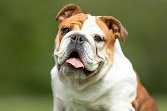

Categories of dogs

German shephard
Description
German Shepherd Dog is a muscular dog of noble character and high intelligence.
Loyal, confident, courageous, and steady.

Golden Retriever
Description
The Golden Retriever is a muscular dog , famous for the lustrous coat of gold that gives the breed its name
and is friendly and has intelligent eyes.

Bulldog
Description
Bulldog is a thick-set, low-slung, well-muscled bruiser
whose 'sourmug' face is the universal symbol of courage and tenacity.